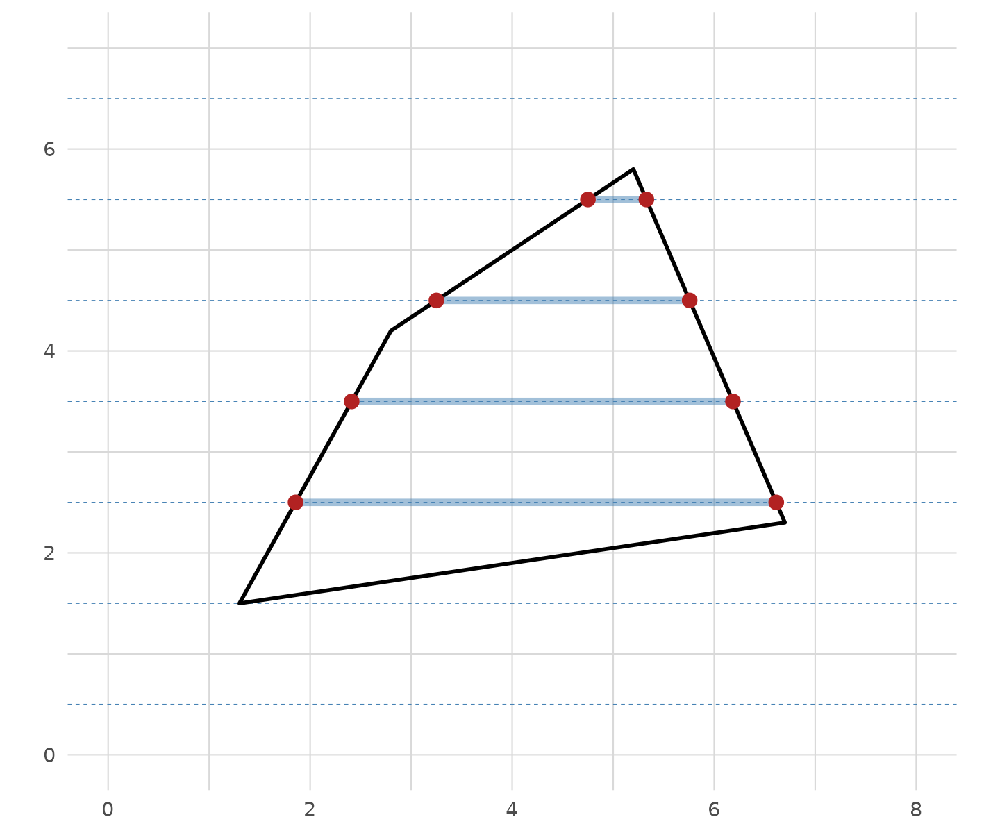
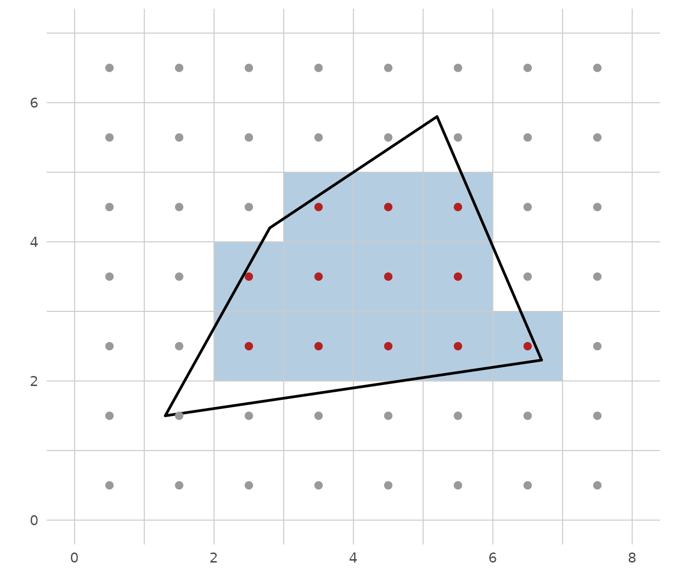
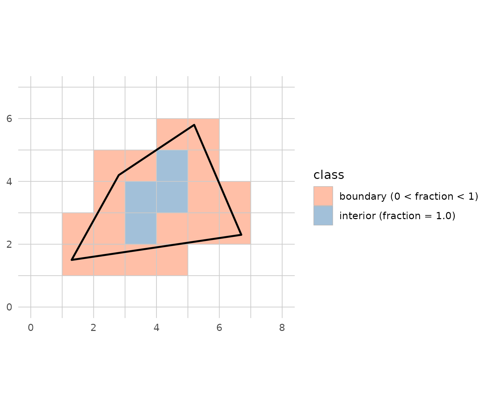
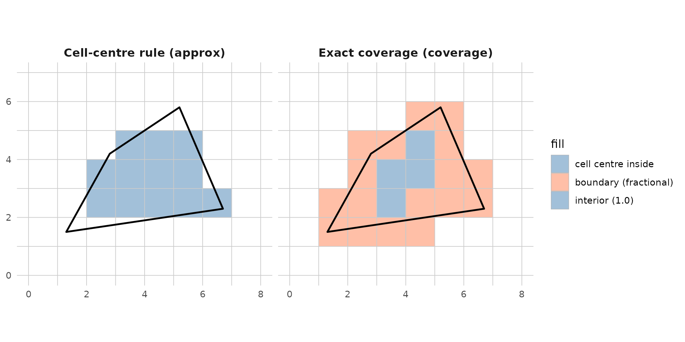
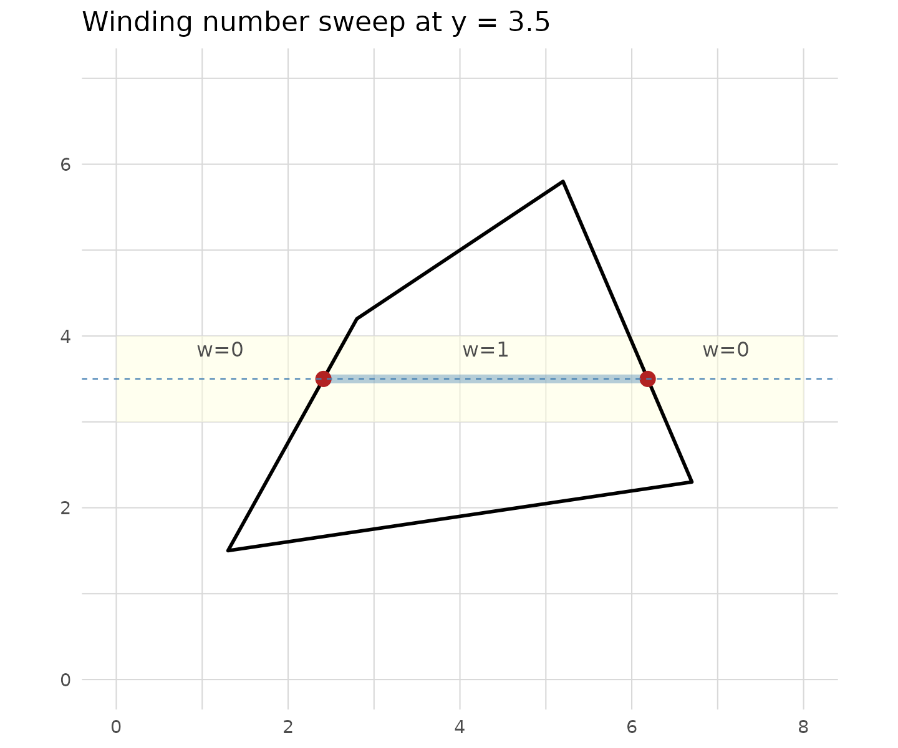
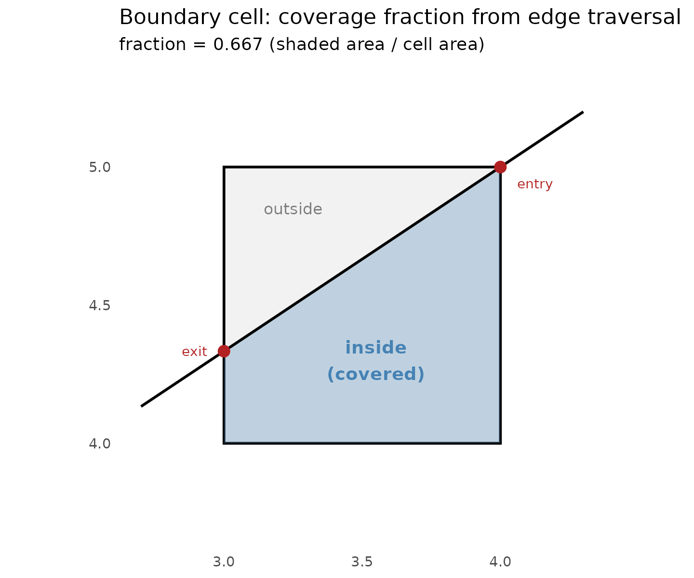
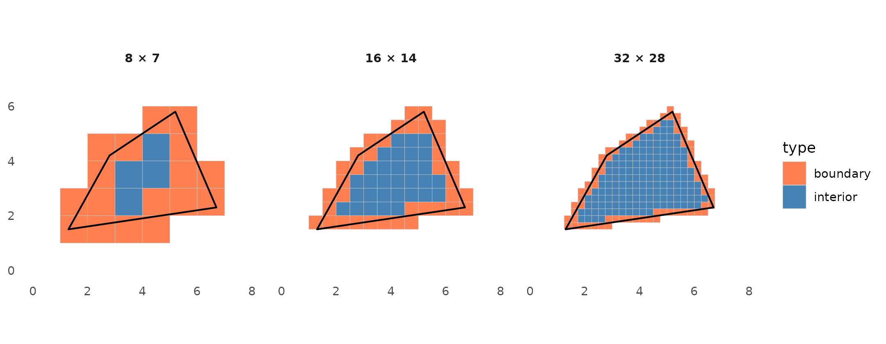
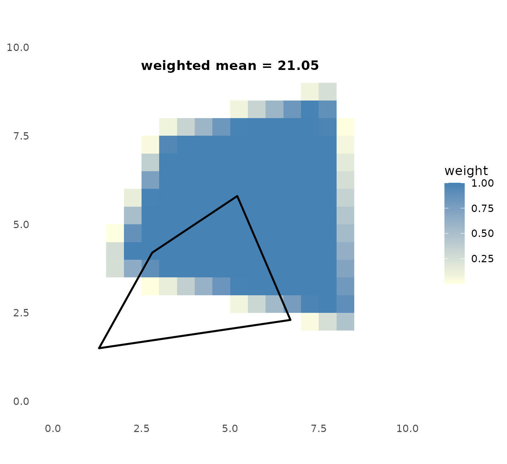

vignettes/algorithms.Rmd
algorithms.RmdThree related tools — fasterize, exactextract, and controlledburn — all answer the same underlying question:
How does this geometry relate to this grid?
They differ in what they do with the answer. Understanding the algorithms means understanding both the geometric computation and the motivation that shaped each tool’s design.
At the heart of all polygon rasterization is the scanline fill: walk a horizontal line across each row of the grid, find where polygon edges cross it, and fill between the crossings.
scanline_segs <- do.call(rbind, lapply(seq(0.5, ny - 0.5), function(y_mid) {
xints <- edge_crossings(poly_x, poly_y, y_mid)
if (length(xints) >= 2) {
pairs <- matrix(xints, ncol = 2, byrow = TRUE)
data.frame(y = y_mid, xstart = pairs[, 1], xend = pairs[, 2])
}
}))
scanline_pts <- do.call(rbind, lapply(seq(0.5, ny - 0.5), function(y_mid) {
xints <- edge_crossings(poly_x, poly_y, y_mid)
if (length(xints) >= 2) data.frame(y = y_mid, x = xints)
}))
ggplot() +
geom_vline(xintercept = 0:nx, colour = "grey85", linewidth = 0.3) +
geom_hline(yintercept = 0:ny, colour = "grey85", linewidth = 0.3) +
geom_hline(yintercept = seq(0.5, ny - 0.5), colour = "steelblue",
linewidth = 0.2, linetype = "dashed") +
geom_polygon(aes(x = poly_x, y = poly_y),
fill = NA, colour = "black", linewidth = 0.8) +
geom_segment(data = scanline_segs,
aes(x = xstart, xend = xend, y = y, yend = y),
colour = "steelblue", linewidth = 1.5, alpha = 0.5) +
geom_point(data = scanline_pts, aes(x, y),
colour = "firebrick", size = 2.5) +
coord_equal(xlim = c(0, nx), ylim = c(0, ny)) +
theme_grid()
Scanline fill: for each row, polygon edges are intersected with the row’s horizontal scanline (dashed blue). Red dots mark the intersections. Between each pair of crossings, all cells along the blue segment are ‘inside’ the polygon.
This is efficient: the cost is proportional to the number of edges times the number of rows they span — O(perimeter), not O(area). A small polygon on a billion-cell grid produces a handful of crossings per row.
The question is: what do you do with those crossings?
The crossings tell you which cells are interior (fully between edge pairs). But what about the cells where the edge actually crosses? A polygon edge slices through a cell, leaving part inside and part outside. The two fundamental approaches:
The simplest answer: a cell is “in” if its centre point falls inside the polygon. Binary, no fractions. Fast to compute — you already know the crossing x-coordinates, so you just check whether the cell centre is between a pair.
centers <- expand.grid(
cx = seq(0.5, nx - 0.5, by = 1),
cy = seq(0.5, ny - 0.5, by = 1)
)
centers$inside <- mapply(pip, centers$cx, centers$cy,
MoreArgs = list(poly_x = poly_x, poly_y = poly_y))
# Highlight "in" cells
in_rects <- centers[centers$inside, ]
in_rects <- data.frame(
xmin = in_rects$cx - 0.5, xmax = in_rects$cx + 0.5,
ymin = in_rects$cy - 0.5, ymax = in_rects$cy + 0.5
)
ggplot() +
geom_rect(data = in_rects,
aes(xmin = xmin, xmax = xmax, ymin = ymin, ymax = ymax),
fill = "steelblue", alpha = 0.4) +
geom_vline(xintercept = 0:nx, colour = "grey80", linewidth = 0.3) +
geom_hline(yintercept = 0:ny, colour = "grey80", linewidth = 0.3) +
geom_polygon(aes(x = poly_x, y = poly_y),
fill = NA, colour = "black", linewidth = 0.8) +
geom_point(data = centers, aes(cx, cy, colour = inside), size = 1.8) +
scale_colour_manual(values = c("TRUE" = "firebrick", "FALSE" = "grey60"),
guide = "none") +
coord_equal(xlim = c(0, nx), ylim = c(0, ny)) +
theme_grid()
Cell-centre rule: each cell is classified by whether its centre point (dot) falls inside the polygon. Red = inside, grey = outside. No partial coverage — every cell is either fully in or fully out.
This is what fasterize does, and what controlledburn’s approx mode reproduces. It’s fast, simple, and correct for many use cases — but it doesn’t conserve area. The total burned area (count of cells × cell area) won’t match the polygon’s true area.
The precise answer: for each boundary cell, compute the exact fraction of the cell that falls inside the polygon. Interior cells get fraction 1.0, exterior get 0.0, and boundary cells get an analytically computed value between 0 and 1.
# Proper segment-cell intersection via parametric clipping
seg_crosses_cell <- function(x0, y0, x1, y1, cxmin, cymin, cxmax, cymax) {
if (min(x0, x1) > cxmax || max(x0, x1) < cxmin ||
min(y0, y1) > cymax || max(y0, y1) < cymin) return(FALSE)
sdx <- x1 - x0; sdy <- y1 - y0
if (sdx != 0) {
tx1 <- (cxmin - x0) / sdx; tx2 <- (cxmax - x0) / sdx
if (tx1 > tx2) { tmp <- tx1; tx1 <- tx2; tx2 <- tmp }
} else {
tx1 <- if (x0 >= cxmin && x0 <= cxmax) -Inf else Inf
tx2 <- if (x0 >= cxmin && x0 <= cxmax) Inf else -Inf
}
if (sdy != 0) {
ty1 <- (cymin - y0) / sdy; ty2 <- (cymax - y0) / sdy
if (ty1 > ty2) { tmp <- ty1; ty1 <- ty2; ty2 <- tmp }
} else {
ty1 <- if (y0 >= cymin && y0 <= cymax) -Inf else Inf
ty2 <- if (y0 >= cymin && y0 <= cymax) Inf else -Inf
}
max(tx1, ty1, 0) < min(tx2, ty2, 1) - 1e-10
}
cell_class <- function(cx, cy) {
xmin <- cx - 0.5; xmax <- cx + 0.5
ymin <- cy - 0.5; ymax <- cy + 0.5
n <- length(poly_x) - 1
edge_crosses <- FALSE
for (i in seq_len(n)) {
if (seg_crosses_cell(poly_x[i], poly_y[i], poly_x[i+1], poly_y[i+1],
xmin, ymin, xmax, ymax)) {
edge_crosses <- TRUE; break
}
}
if (!edge_crosses) {
return(if (pip(cx, cy, poly_x, poly_y)) "interior" else "exterior")
}
"boundary"
}
centers$class <- mapply(cell_class, centers$cx, centers$cy)
cell_rects <- data.frame(
xmin = centers$cx - 0.5, xmax = centers$cx + 0.5,
ymin = centers$cy - 0.5, ymax = centers$cy + 0.5,
class = centers$class
)
ggplot() +
geom_rect(data = cell_rects[cell_rects$class != "exterior", ],
aes(xmin = xmin, xmax = xmax, ymin = ymin, ymax = ymax,
fill = class),
alpha = 0.5, colour = "grey70", linewidth = 0.2) +
geom_vline(xintercept = 0:nx, colour = "grey80", linewidth = 0.3) +
geom_hline(yintercept = 0:ny, colour = "grey80", linewidth = 0.3) +
geom_polygon(aes(x = poly_x, y = poly_y),
fill = NA, colour = "black", linewidth = 0.8) +
scale_fill_manual(values = c("interior" = "steelblue",
"boundary" = "coral"),
labels = c("interior" = "interior (fraction = 1.0)",
"boundary" = "boundary (0 < fraction < 1)")) +
coord_equal(xlim = c(0, nx), ylim = c(0, ny)) +
theme_grid()
Exact coverage: interior cells (blue, fraction = 1.0) are fully inside. Boundary cells (coral) have an exact coverage fraction — the proportion of the cell area that falls inside the polygon edge. Total coverage equals the polygon’s true area.
This is what Daniel Baston’s exactextract computes, and what controlledburn’s coverage mode uses. The analytical traversal walks each polygon edge through the grid, computing the exact sub-pixel area on each side of the edge in every cell it crosses. The total coverage (sum of all fractions × cell area) equals the polygon’s true geometric area.
The difference is only at the boundary. Both approaches agree on interior cells (fully inside) and exterior cells (fully outside). They disagree on the ~O(perimeter) boundary cells:
# Side-by-side
centers$approx <- ifelse(centers$inside, "in", "out")
centers$coverage <- centers$class
d1 <- data.frame(
xmin = centers$cx - 0.5, xmax = centers$cx + 0.5,
ymin = centers$cy - 0.5, ymax = centers$cy + 0.5,
fill = ifelse(centers$approx == "in", "approx: in", "none"),
panel = "Cell-centre rule (approx)"
)
d2 <- data.frame(
xmin = centers$cx - 0.5, xmax = centers$cx + 0.5,
ymin = centers$cy - 0.5, ymax = centers$cy + 0.5,
fill = ifelse(centers$coverage == "interior", "interior",
ifelse(centers$coverage == "boundary", "boundary", "none")),
panel = "Exact coverage (coverage)"
)
dd <- rbind(d1, d2)
dd <- dd[dd$fill != "none", ]
poly_df <- data.frame(x = poly_x, y = poly_y)
grid_v <- data.frame(x = 0:nx)
grid_h <- data.frame(y = 0:ny)
ggplot(dd) +
geom_rect(aes(xmin = xmin, xmax = xmax, ymin = ymin, ymax = ymax,
fill = fill),
alpha = 0.5, colour = "grey70", linewidth = 0.2) +
geom_vline(data = grid_v, aes(xintercept = x),
colour = "grey80", linewidth = 0.3) +
geom_hline(data = grid_h, aes(yintercept = y),
colour = "grey80", linewidth = 0.3) +
geom_polygon(data = poly_df, aes(x, y),
fill = NA, colour = "black", linewidth = 0.8) +
scale_fill_manual(
values = c("approx: in" = "steelblue",
"interior" = "steelblue",
"boundary" = "coral"),
labels = c("approx: in" = "cell centre inside",
"interior" = "interior (1.0)",
"boundary" = "boundary (fractional)")
) +
facet_wrap(~panel) +
coord_equal(xlim = c(0, nx), ylim = c(0, ny)) +
theme_grid() +
theme(strip.text = element_text(face = "bold", size = 11))
The same polygon, two classification schemes. Left: cell-centre rule — every cell is in or out. Right: exact coverage — boundary cells (coral) carry a fractional weight. Interior cells (blue) are the same in both.
The algorithm determines what you can compute. But the motivation determines which algorithm you reach for.
fasterize was built for raster map production. The typical workflow: assign a value from each polygon’s attribute table to the cells it covers. Three knobs control the output:
"last" (most recent polygon wins), "sum"
(accumulate), "min", "max", etc.The cell-centre rule is perfect here: you need a single winner per cell, and fractional coverage doesn’t help choose which polygon “owns” a pixel.
exactextract was built for zonal statistics. The typical workflow: given a raster of (say) temperature values and a set of polygons, compute the area-weighted mean temperature in each polygon. The coverage fraction is the weight:
where is the coverage fraction and is the raster value in cell . Without exact fractions, boundary cells bias the result — especially for small polygons where boundary cells dominate.
controlledburn separates the geometric computation from the application. It produces the sparse intersection table — runs, edges, fractions — and lets the caller decide what to do with it:
fun = "last")id column to track which polygon covers which
cellThe sparse representation makes this possible at scales where materializing a dense raster is infeasible. The 8-trillion-cell Antarctic example in the README produces 438 MB of sparse runs from a 2.7-million × 2.9-million pixel grid — a dense raster at that resolution would require ~30 TB.
Approx mode reimplements the scanline fill as a direct edge–row intersection sweep. For each polygon edge, it computes the x-coordinate where the edge crosses each row’s scanline, accumulates winding numbers, and fills between crossings. ~120 lines of C++, no traversal bookkeeping.
# Illustration of winding accumulation for one row
y_show <- 3.5
xints <- edge_crossings(poly_x, poly_y, y_show)
# Build winding annotation
winding_df <- data.frame(
x = c(0, xints),
xend = c(xints, nx),
y = y_show,
winding = cumsum(c(0, rep(c(1, -1), length.out = length(xints))))
)
ggplot() +
geom_vline(xintercept = 0:nx, colour = "grey85", linewidth = 0.3) +
geom_hline(yintercept = 0:ny, colour = "grey85", linewidth = 0.3) +
# Highlight the row
geom_rect(aes(xmin = 0, xmax = nx, ymin = y_show - 0.5, ymax = y_show + 0.5),
fill = "lightyellow", alpha = 0.5) +
# Polygon
geom_polygon(aes(x = poly_x, y = poly_y),
fill = NA, colour = "black", linewidth = 0.8) +
# Winding spans
geom_segment(data = winding_df[winding_df$winding != 0, ],
aes(x = x, xend = xend, y = y, yend = y),
colour = "steelblue", linewidth = 2, alpha = 0.4) +
# Crossing points with arrows
geom_point(data = data.frame(x = xints, y = y_show),
aes(x, y), colour = "firebrick", size = 3) +
# Winding labels
geom_text(data = winding_df,
aes(x = (x + xend) / 2, y = y + 0.35,
label = paste0("w=", winding)),
size = 3.5, colour = "grey30") +
# Scanline
geom_hline(yintercept = y_show, colour = "steelblue",
linewidth = 0.3, linetype = "dashed") +
coord_equal(xlim = c(0, nx), ylim = c(0, ny)) +
theme_grid() +
labs(title = sprintf("Winding number sweep at y = %.1f", y_show))
Approx mode in detail: for each row, polygon edges are intersected with the scanline at the cell-centre y-coordinate. The winding number accumulates left-to-right: it goes nonzero when entering the polygon (green arrow) and returns to zero when leaving (red arrow). Cells whose centre falls in a nonzero-winding span are classified as ‘inside’ and emitted as runs.
The boundary convention is left-inclusive: when an edge crossing falls exactly on a cell centre, the cell is classified as “inside”. This matches fasterize’s behaviour — on constructed geometries (aligned rectangles, offset rectangles, triangles, holes), approx mode produces cell-for-cell identical output to fasterize.
Coverage mode uses the full traversal engine from exactextract. For each polygon ring, it walks the ring through the grid cell-by-cell, recording the exact coordinates where the ring enters and exits each cell. From these traversal records, it computes the analytically exact fraction of each boundary cell that falls inside the polygon.
# Cell (3.5, 4.5) where edge (5.2,5.8) → (2.8,4.2) cuts diagonally
cell_xmin <- 3; cell_xmax <- 4; cell_ymin <- 4; cell_ymax <- 5
# Edge enters top side at (4.0, 5.0), exits left side at (3.0, 4.333)
entry <- c(4.0, 5.0)
exit <- c(3.0, 4 + 1/3)
# Covered region: polygon interior is below-right of the edge
covered_poly <- data.frame(
x = c(cell_xmin, cell_xmax, cell_xmax, entry[1], exit[1]),
y = c(cell_ymin, cell_ymin, cell_ymax, entry[2], exit[2])
)
frac <- abs(sum(covered_poly$x * c(covered_poly$y[-1], covered_poly$y[1]) -
c(covered_poly$x[-1], covered_poly$x[1]) * covered_poly$y) / 2)
ggplot() +
geom_rect(aes(xmin = cell_xmin, xmax = cell_xmax,
ymin = cell_ymin, ymax = cell_ymax),
fill = "grey95", colour = "black", linewidth = 0.8) +
geom_polygon(data = covered_poly, aes(x, y),
fill = "steelblue", alpha = 0.3) +
geom_segment(aes(x = entry[1] + 0.3,
y = entry[2] + 0.3 * (exit[2] - entry[2]) / (exit[1] - entry[1]),
xend = exit[1] - 0.3,
yend = exit[2] - 0.3 * (exit[2] - entry[2]) / (exit[1] - entry[1])),
colour = "black", linewidth = 0.8) +
geom_point(aes(x = c(entry[1], exit[1]), y = c(entry[2], exit[2])),
colour = "firebrick", size = 3) +
annotate("text", x = 3.55, y = 4.3, label = "inside\n(covered)",
colour = "steelblue", fontface = "bold", size = 4) +
annotate("text", x = 3.25, y = 4.85, label = "outside",
colour = "grey50", size = 3.5) +
annotate("text", x = entry[1] + 0.06, y = entry[2] - 0.06, label = "entry",
colour = "firebrick", size = 3, hjust = 0) +
annotate("text", x = exit[1] - 0.06, y = exit[2], label = "exit",
colour = "firebrick", size = 3, hjust = 1) +
coord_equal(xlim = c(cell_xmin - 0.3, cell_xmax + 0.3),
ylim = c(cell_ymin - 0.3, cell_ymax + 0.3)) +
theme_grid() +
labs(title = "Boundary cell: coverage fraction from edge traversal",
subtitle = sprintf("fraction = %.3f (shaded area / cell area)", frac))
Coverage mode boundary cell detail. The polygon edge enters at the top side and exits at the left. The shaded region is the portion of the cell inside the polygon — its area divided by the cell area gives the coverage fraction (0.667). This is computed analytically from the entry/exit coordinates, not by sampling.
The interior cells between boundary cells are classified by winding number: if the accumulated winding from boundary crossings is nonzero, the cell is fully inside (fraction = 1.0). This is the same winding sweep as approx mode — the only difference is what happens at boundary cells.
Both fasterize and exactextract produce dense output: a full raster matrix where every cell has a value (or NA). This is O(area) in memory.
controlledburn produces sparse output: only the
non-empty cells are recorded. Interior cells are run-length encoded
($runs), boundary cells have individual records
($edges). This is O(perimeter) in memory.
library(geos)
g <- as_geos_geometry(sprintf("POLYGON ((%s))",
paste(sprintf("%.1f %.1f", poly_x, poly_y), collapse = ", ")))
burns <- lapply(c(8, 16, 32), function(s) {
r <- burn(g, extent = c(0, nx, 0, ny), dimension = c(as.integer(s), as.integer(s * ny/nx)))
dx <- nx / s; dy_g <- ny / (s * ny/nx)
cells <- data.frame(
xmin = numeric(0), xmax = numeric(0),
ymin = numeric(0), ymax = numeric(0),
type = character(0)
)
if (nrow(r$runs) > 0) {
for (i in seq_len(nrow(r$runs))) {
row <- r$runs$row[i]
for (col in r$runs$col_start[i]:r$runs$col_end[i]) {
cells <- rbind(cells, data.frame(
xmin = (col - 1) * dx, xmax = col * dx,
ymin = ny - row * dy_g, ymax = ny - (row - 1) * dy_g,
type = "interior"
))
}
}
}
if (nrow(r$edges) > 0) {
for (i in seq_len(nrow(r$edges))) {
row <- r$edges$row[i]; col <- r$edges$col[i]
cells <- rbind(cells, data.frame(
xmin = (col - 1) * dx, xmax = col * dx,
ymin = ny - row * dy_g, ymax = ny - (row - 1) * dy_g,
type = "boundary"
))
}
}
cells$panel <- sprintf("%d × %d", s, as.integer(s * ny/nx))
cells
})
all_cells <- do.call(rbind, burns)
all_cells$panel <- factor(all_cells$panel,
levels = c("8 × 7", "16 × 14", "32 × 28"))
ggplot(all_cells) +
geom_rect(aes(xmin = xmin, xmax = xmax, ymin = ymin, ymax = ymax,
fill = type), colour = "grey80", linewidth = 0.1) +
geom_polygon(data = data.frame(x = poly_x, y = poly_y),
aes(x, y), fill = NA, colour = "black", linewidth = 0.6) +
scale_fill_manual(values = c("interior" = "steelblue", "boundary" = "coral")) +
facet_wrap(~panel) +
coord_equal(xlim = c(0, nx), ylim = c(0, ny)) +
theme_grid() +
theme(strip.text = element_text(face = "bold"))
Resolution scaling: the same polygon at 8×7, 16×14, and 32×28 resolution. Interior cells (blue) grow as area (O(n²)); boundary cells (coral) grow as perimeter (O(n)). Sparse output stores only the blue runs and coral edges — the white cells cost nothing.
As resolution increases, the number of interior cells grows as
(area) while the number of boundary cells grows as
(perimeter). The sparse representation stores only the occupied cells —
at high resolution, it’s overwhelmingly interior runs, which compress to
a handful of (row, col_start, col_end) records per row.
This is why controlledburn can burn 25,954 Antarctic rock outcrop polygons onto an 8-trillion-cell grid in 8 seconds using 438 MB of memory. A dense raster would require ~30 TB.
The sparse tables from burn() contain everything needed
for area-weighted zonal statistics — the same operation exactextract was
built for. The key insight: the coverage fraction is the
weight.
library(terra)
#> terra 1.9.46
# A 20×20 raster of "temperature" values: a gradient from 10 to 30
r_temp <- rast(nrows = 20, ncols = 20, xmin = 0, xmax = 10,
ymin = 0, ymax = 10, crs = "")
values(r_temp) <- seq(10, 30, length.out = 400)
# A polygon that doesn't align with cell boundaries
poly <- geos::as_geos_geometry(
"POLYGON ((1.3 2.1, 7.8 1.5, 6.2 8.3, 2.5 6.9, 1.3 2.1))")
# Burn with exact coverage fractions
b <- burn(poly, extent = c(0, 10, 0, 10), dimension = c(20L, 20L))
# Extract raster values as a 20×20 matrix (row 1 = top = ymax)
vals_temp <- matrix(terra::values(r_temp), nrow = 20, ncol = 20, byrow = TRUE)
run_values <- numeric(0)
run_weights <- numeric(0)
for (i in seq_len(nrow(b$runs))) {
row <- b$runs$row[i]
cols <- b$runs$col_start[i]:b$runs$col_end[i]
run_values <- c(run_values, vals_temp[row, cols])
run_weights <- c(run_weights, rep(1.0, length(cols)))
}
# Extract raster values at edge (boundary) cells — fraction in (0, 1)
edge_values <- vals_temp[cbind(b$edges$row, b$edges$col)]
edge_weights <- b$edges$fraction
# Area-weighted mean: sum(value * weight) / sum(weight)
all_values <- c(run_values, edge_values)
all_weights <- c(run_weights, edge_weights)
weighted_mean <- sum(all_values * all_weights) / sum(all_weights)
cat(sprintf("Weighted mean temperature: %.4f\n", weighted_mean))
#> Weighted mean temperature: 21.0549This is exactly what
exactextractr::exact_extract(r_temp, poly, "weighted_mean")
computes — the same coverage fractions, the same weighted aggregation.
The difference is that controlledburn gives you the sparse intersection
table as a first-class object: you can inspect it, filter it, crop it
with crop_burn(), or pass it to a downstream package,
rather than having the extraction happen inside a single function
call.
# Visualise: raster + polygon + coverage weights
mat <- materialize_chunk(b)
coverage_df <- expand.grid(
col = seq_len(20), row = seq_len(20)
)
coverage_df$coverage <- as.vector(mat)
coverage_df$x <- (coverage_df$col - 0.5) * 0.5
coverage_df$y <- 10 - (coverage_df$row - 0.5) * 0.5
ggplot() +
geom_raster(data = coverage_df[coverage_df$coverage > 0, ],
aes(x, y, fill = coverage)) +
scale_fill_gradient(low = "lightyellow", high = "steelblue",
name = "weight") +
geom_polygon(data = data.frame(x = poly_x, y = poly_y),
aes(x, y), fill = NA, colour = "black", linewidth = 0.8) +
annotate("text", x = 5, y = 9.5,
label = sprintf("weighted mean = %.2f", weighted_mean),
fontface = "bold", size = 4) +
coord_equal(xlim = c(0, 10), ylim = c(0, 10)) +
theme_grid()
Zonal statistics from sparse output. The raster shows a temperature gradient; the polygon boundary is overlaid. Interior cells (weight 1.0) and boundary cells (weight = coverage fraction) are combined for the area-weighted mean — the same result as exactextract.
| fasterize | exactextract | controlledburn | |
|---|---|---|---|
| Algorithm | Scanline fill, centre rule | Walker + analytical coverage | Both (approx / coverage mode) |
| Boundary cells | Binary in/out | Exact fraction | Both options |
| Output | Dense raster | Dense raster (or weights) | Sparse tables |
| Memory | O(area) | O(area) | O(perimeter) |
| Primary use | Raster map production | Zonal statistics | Geometry–grid intersection |
| Dependencies | Rcpp, sf, Armadillo | GEOS, Rcpp | cpp11, wk |
The three tools answer the same geometric question. controlledburn factors the answer into a reusable sparse representation that supports all three motivations — masking, weighting, and identification — at scales where dense output is infeasible.
See vignette("architecture") for the development history
and code structure.